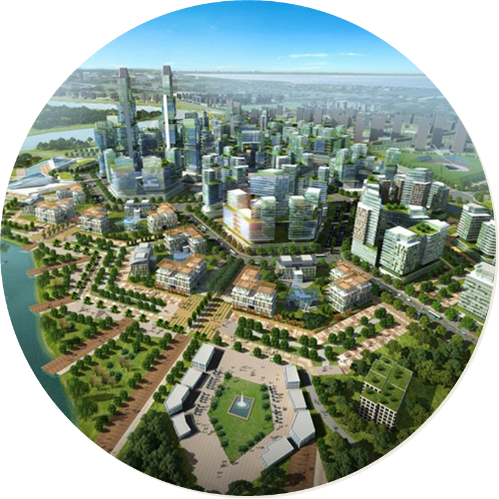
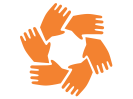
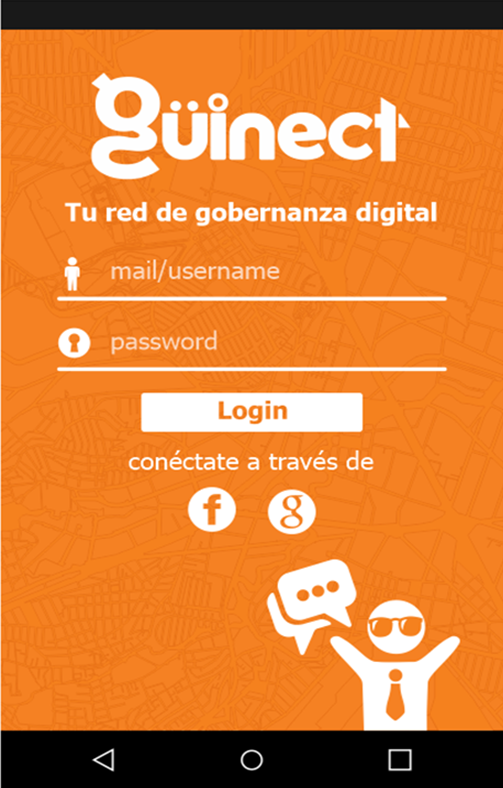
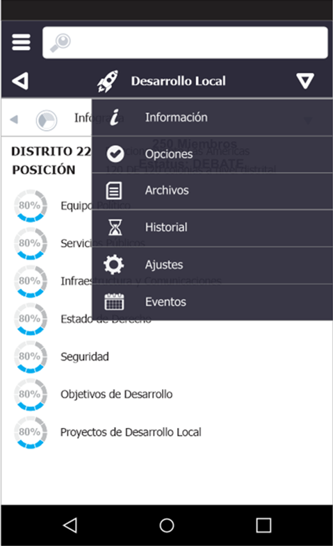

Güinect es una plataforma de inteligencia comunitaria, gobernanza digital y datos cívicos, inspirada en la democracia participativa y en modelos exitosos de gobernanza y gobierno abierto. En esencia, Güinect es una red de redes, un ecosistema de comunidades y y movimientos impulsados por personas que comparten problemas, conocimiento y el deseo de construir mejores soluciones.
Una comunidad puede estar trabajando para mejorar la seguridad de su colonia. Otra puede buscar soluciones para llevar agua a una región rural. Otras pueden organizarse alrededor del acceso a alimentos, la educación, los espacios públicos, la movilidad, el desarrollo económico o el manejo de residuos.
Cada una puede convertirse en su propia red: personas conectadas alrededor de un propósito común, generando conocimiento y coordinando acciones.
esas redes no tienen por qué existir de manera aislada. Güinect busca conectarlas para crear un ecosistema donde el conocimiento, los recursos, las experiencias y las soluciones que funcionan puedan viajar entre comunidades.
Porque una solución descubierta en una comunidad puede ayudar a otra. Una organización puede tener el conocimiento que otra necesita. Una universidad puede aportar investigación. Una empresa puede aportar tecnología. Un gobierno puede aportar capacidad institucional. Y los ciudadanos aportan algo que ningún otro actor puede sustituir: la experiencia cotidiana de vivir su comunidad.
Transforma experiencias individuales en conocimiento colectivo, y conocimiento colectivo en acción.
El objetivo es comprender qué está pasando, dónde está pasando, qué necesita una comunidad, qué conocimiento existe dentro de ella y qué podemos hacer juntos al respecto.
Así, miles de experiencias individuales pueden comenzar a convertirse en información útil para ciudadanos, organizaciones, instituciones y líderes. Y esa información puede convertirse en mejores decisiones, mejores iniciativas, mejores políticas públicas y mejores proyectos de desarrollo local.
Con el objetivo de ayudar a construir comunidades más inteligentes, participativas, conectadas, autosuficientes y sostenibles.
Todos los días hay personas que quieren mejorar algo en su comunidad. Ven un problema. Tienen una idea. Conocen algo que podría ayudar. Quieren participar. Pero muchas veces no saben dónde empezar, con quién conectarse o cómo transformar esa intención en acción.
La información está fragmentada. Las personas están desconectadas. Las instituciones trabajan por separado. El conocimiento de una comunidad rara vez se organiza de manera que pueda convertirse en decisiones y soluciones.
Y muchas buenas ideas simplemente se pierden.
Güinect busca reducir las barreras creadas por la desorganización, la complejidad institucional, la falta de información, la falta de conocimiento y los canales limitados de participación.




